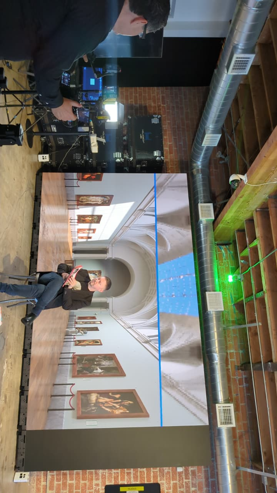
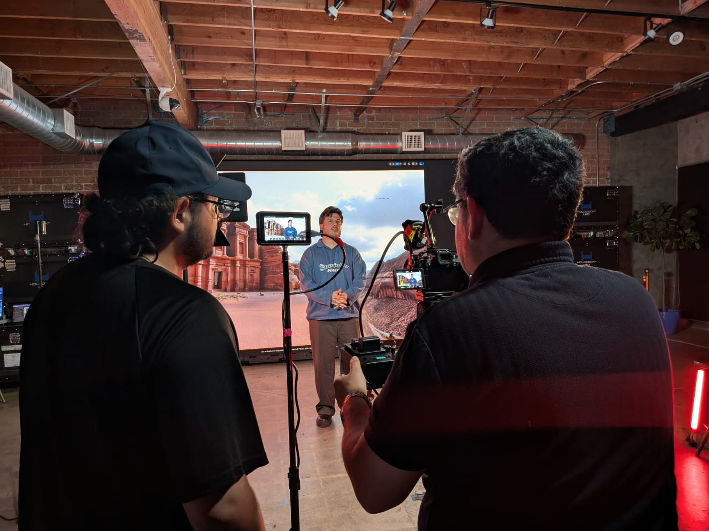
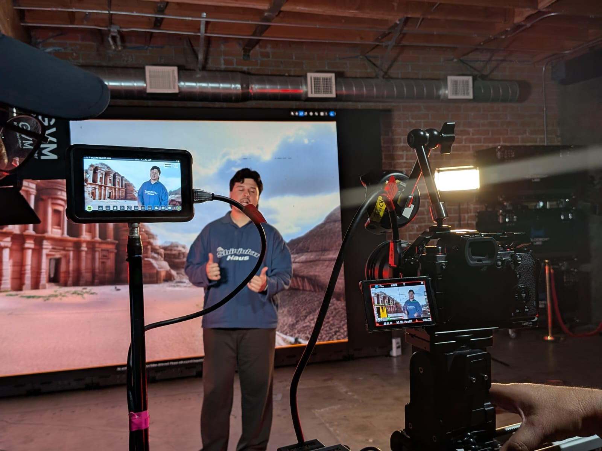

Portafolio

Configuración de la Infraestructura Virtual
Sincronización de señales y monitoreo técnico. Configuración de flujos de video para asegurar la perfecta integración entre la cámara física y el entorno digital generado.

Composición y Resultado Visual
Supervisión técnica en set de Producción Virtual. Coordinación de iluminación y encuadre para optimizar la captura de talento frente a paredes LED de alta resolución.

Composición y Resultado Visual
Control de calidad y narrativa visual. Verificación de la composición final para asegurar un resultado fotorrealista y profesional en la fase de captura.

YO YA C
Video musical con motion graphics Producción audiovisual de un video con letras animadas (lyric video), donde me encargué de la grabación, composición visual y animación de los textos. El proyecto combinó escenas grabadas con elementos gráficos en movimiento, buscando reforzar el ritmo y el mensaje de la canción..

Desierto en Alerta
Proyecto de edición visual sobre una escena del videojuego War Thunder. Se integraron letras animadas en 3D dentro del entorno del juego, cuidando la composición, el ritmo y la narrativa visual. El enfoque fue combinar acción y mensaje utilizando motion graphics como recurso expresivo dentro del gameplay..